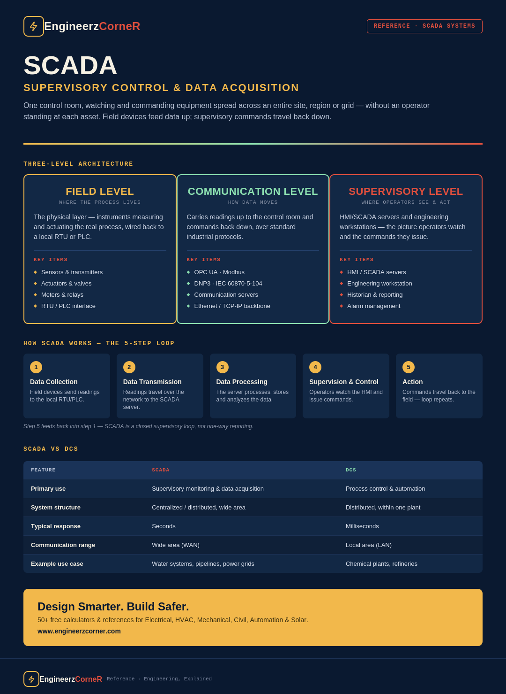

SCADA (Supervisory Control and Data Acquisition) is a software-and-hardware system that lets a central control room monitor, control and analyze physical processes that may be spread across one site or an entire country. It pulls data from field devices, gives operators supervisory command over that equipment, and logs everything so trends, alarms and reports are available without anyone walking out to the field.

SCADA at a glance — three-level architecture, the 5-step working loop, and SCADA vs DCS.
Key functions
SCADA system architecture — three levels
Every SCADA system stacks the same three tiers, regardless of industry:
| Level | What sits here | Job |
|---|---|---|
| Field Level | Sensors, transmitters, actuators, meters, relays, valves feeding an RTU/PLC | Measures and actuates the physical process |
| Communication Level | Communication servers running OPC, Modbus, DNP3, IEC 60870-5-104, etc. | Carries data between field devices and the supervisory layer |
| Supervisory Level | HMI/SCADA servers and engineering workstations | Displays, logs and lets operators command the whole system |
Data only flows upward to be seen and downward to be acted on — the RTU/PLC at field level is still what's actually executing control locally; SCADA supervises it rather than replacing it.
How SCADA works — the 5-step loop
Step 5 feeding back into step 1 is the whole point: SCADA is a closed supervisory loop, not a one-way reporting tool.
SCADA components
| Component | Function |
|---|---|
| HMI (Human Machine Interface) | Graphical interface for monitoring and control |
| SCADA Server | Manages data, alarms, logging, reports and user access |
| RTU (Remote Terminal Unit) | Interfaces with field devices and transmits data to SCADA |
| PLC (Programmable Logic Controller) | Controls field processes and communicates with SCADA |
| Communication Network | Transmits data between field devices and the SCADA system |
| Field Devices | Sensors, transmitters, actuators, meters, valves and other instruments |
Communication protocols
| Protocol | What it's for |
|---|---|
| OPC UA | Platform-independent, secure, reliable communication standard |
| Modbus | Widely used open protocol for industrial device communication |
| DNP3 | Standard for communication between a SCADA master and RTUs |
| IEC 60870-5-104 | Secure telecontrol protocol over IP networks — covered in detail here |
| Ethernet / TCP-IP | Common backbone communication for modern SCADA systems |
Types of SCADA systems
| Type | Description |
|---|---|
| Stand-Alone SCADA | Single-site system with local HMI and communication to field devices |
| Distributed SCADA | Multiple SCADA servers and HMIs coordinated across multiple locations |
| Networked SCADA | SCADA systems connected over a wide area network (WAN) |
| Web-Based SCADA | Access and monitoring through web browsers and mobile devices |
SCADA vs DCS
| Feature | SCADA | DCS |
|---|---|---|
| Primary use | Supervisory monitoring and data acquisition | Process control and automation |
| System structure | Centralized / distributed over wide areas | Distributed control within one plant |
| Control | Primarily monitoring and command | Direct, continuous control of processes |
| Typical communication range | Wide area (WAN) | Local area (LAN) |
| Typical response time | Seconds | Milliseconds |
| Example use case | Water systems, pipelines, power grids | Chemical plants, refineries |
For where PLC fits alongside these two, see PLC vs DCS vs SCADA Explained.
Industrial applications
- ✓Water & wastewater: monitoring pumps, tanks, flow, level and water quality.
- ✓Oil & gas: monitoring pipelines, wellheads, refineries and storage.
- ✓Power & energy: monitoring power plants, substations and distribution.
- ✓Manufacturing: monitoring machines, production lines and utilities.
- ✓Transportation: railways, tunnels, airports and traffic control systems.
- ✓Building automation: HVAC, lighting, security and energy management.
Alarm management
A SCADA system is only as useful as its alarm list is trustworthy. Good practice:
- ✓Prioritize alarms based on severity and impact, not just order of arrival.
- ✓Give operators clear, actionable alarm messages, not raw tag names.
- ✓Avoid alarm flooding — nuisance and duplicate alarms bury the ones that matter.
- ✓Enable proper alarm acknowledgment, shelving and history logging.
- ✓Effective alarm management reduces operator stress and improves overall safety.
Where SCADA is heading
- ✓Integration with IIoT and cloud platforms for real-time data access from anywhere.
- ✓Advanced analytics and AI for predictive maintenance and anomaly detection.
- ✓Stronger cybersecurity built around SCADA's role as critical infrastructure.
- ✓Mobile and web access for remote monitoring and control on any device.
Key takeaways
- ✓SCADA connects the field to the control room — sensors and RTUs feed data up, commands travel back down.
- ✓The three-level architecture — field, communication, supervisory — is the same regardless of industry.
- ✓SCADA is built for wide-area supervision over many sites; DCS is built for tight, continuous control inside one plant.
- ✓Alarm management quality determines whether operators can actually trust and act on what SCADA shows them.